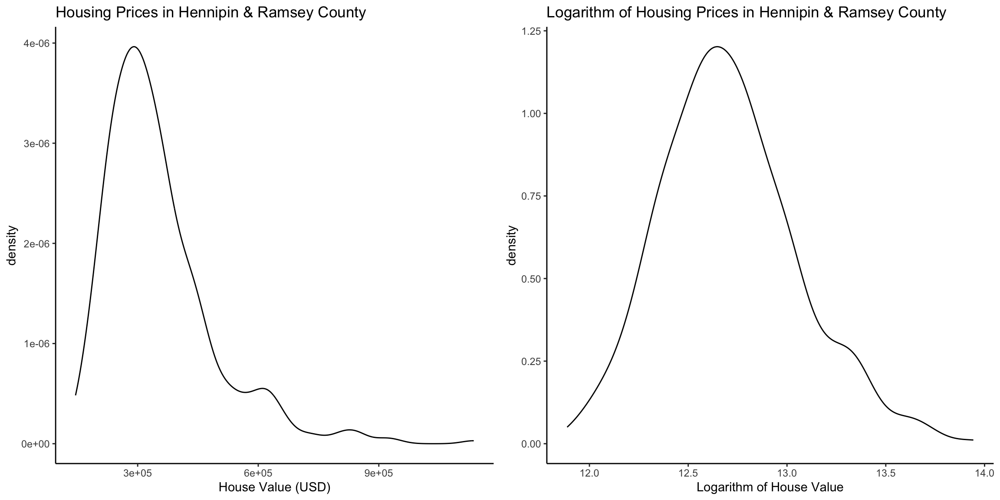
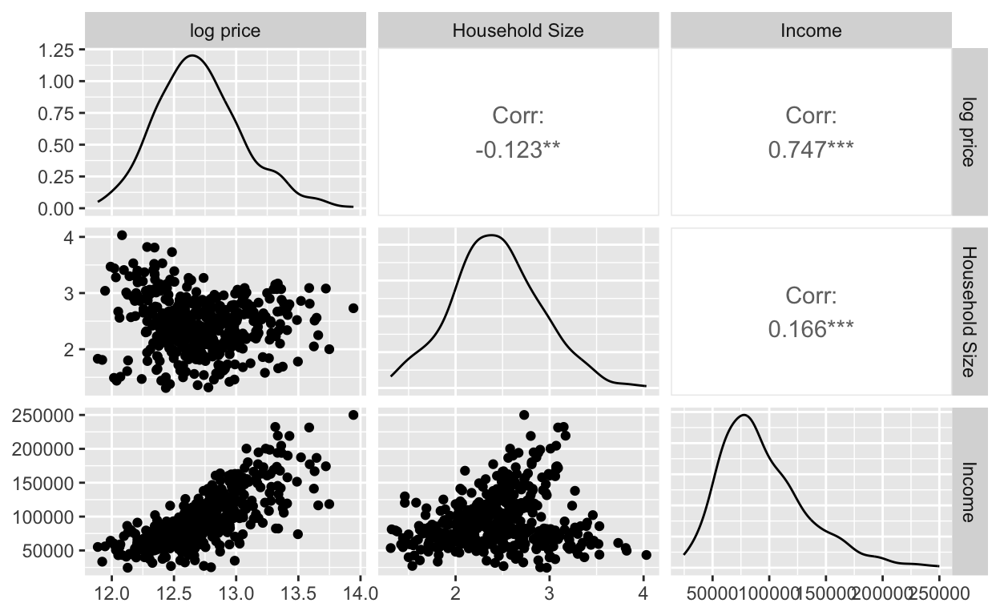

- Goal: estimate housing prices in Hennepin and Ramsey county, Minneapolis, Minnesota using the BYM spatial model with R-INLA packages.
The R-INLA Package
The integrated nested Laplace approximation (INLA) approach is implemented in the R package R-INLA (Havard Rue, Lindgren, and Teixeira Krainski 2023). The INLA website http://www.r-inla.org includes introductions, instructions for download, examples, and other resources (i.e.discussion group, news, etc.) about INLA and the R-INLA package (Wang, Ryan, and Faraway 2018; Krainski et al.2019; Moraga 2019; Gmez-Rubio 2020).
To install R-INLA, we use the install.packages() function specifying the R-INLA repository since the package is not on CRAN.
#install.packages("INLA", repos = "https://inla.r-inla-download.org/R/stable", dep = TRUE)
library(INLA)To fit a model using INLA in R, we typically define the linear predictor as a formula object. Then, we call the inla() function (MAIN function), passing the formula, the family distribution, the data, and any other necessary options. This function works in a similar way as the glm() functions that we mostly familiar with.
Spatial Modeling of Housing Prices
Housing Value Data in Twins Cities
We used the data from 2015-2019 American Community Service (https://www.census.gov/programs-surveys/acs) run by the U.S. Census Bureau. We used the housing prices in Hennipin and Ramsey county, Minnesota are gathered aggregate summaries of the people who live in Hennepin and Ramsey county, summarized for each census tract. A census tract is a statistical subdivision of a county that aims to have roughly 4,000 inhabitants and they are intended to be fairly homogeneous with respect to demographic and economic conditions.
The plot on the left below shows the distribution of housing prices in Hennipin and Ramsey county. We observed that the distribution of the housing prices is skewed to the right. So, we applied a logarithmic transformation to housing prices to standardize their values. After standardized housing prices, we observed the housing prices distribution is normal distributed with a mean around 12.6.
library(ggplot2)
library(gridExtra)
load('SpatialData.RData')
mn <- ggplot(mn_data, aes(x=HouseValueE))+
geom_density() +
ggtitle("Housing Prices in Hennipin & Ramsey County") +
labs(x="House Value (USD)")+
theme_classic()
mn_log <- ggplot(mn_data, aes(x=log(HouseValueE)))+
geom_density()+
ggtitle("Logarithm of Housing Prices in Hennipin & Ramsey County") +
labs(x="Logarithm of House Value")+
theme_classic()
grid.arrange(mn, mn_log, ncol = 2)
This data set contains housing data of 464 Hennepin and Ramsey census tracts including median prices of housing in USD, median household income in the past 12 months (in 2019 inflation), and average household size of occupied houses. We take the logarithm of the median housing prices to put it in the same scale. Figure 1 below maps the distribution of log house price in the focused regions. The map suggests that the housing prices are greater in the southwest, and prices are related to those in neighboring areas. Noted that the empty area is the University of Minnesota area, since there is no houses listed.
Figure 1 Logarithm of housing prices in Hennipin & Ramsey county, MN per census tract from the spData package
We will model the logarithm of the median prices using as covariates the average Median household income in the past 12 months and the average household size. Figure 2 shows the relationships between pairs of variables visualized using the ggpairs() function of the GGally package (Schloerke et al.2021). We observe a negative relationship between the logarithm of housing price and crime, and a positive relationship between the logarithm of housing price and the average number of rooms.
Figure 2 Relationship between the outcome variable logarithm of housing price, and the average Median household income in the past 12 months and the average household size.
library(GGally)
ggpairs(data = mn_data,
columns = c("vble", "HouseholdSizeE", "IncomeE"),
columnLabels = c("log price", "Household Size", "Income"))
General Model
Let \(Y_i\) be the logarithm of housing price of area \(i\), \(i = 1 , \dots, n\). We fit a BYM model that considers \(Y_i\) as the response variable, and household income and household size as covariates:
\[ Y_i \sim N(\mu_i,\sigma^2), i = 1, \dots, n \\ \text{where } \mu_i=\beta_0+\beta_1 \times Income_i+\beta_2 \times HouseholdSize_i + u_i+_i \] where, - \(\beta_0\): the global intercept, measuring the typical log housing price when all the predictors are 0. - \(\beta_1\), \(\beta_2\): represent respectively, the coefficients of the covariates household income and household size. - \(\mu_i\): a spatially structured effect modeled with a CAR structure,\(\mu_i| u_{-i} \sim N(\mu_{\delta_i}, \frac{\sigma^2_u}{n_{\delta_i}})\). - \(_i\): an unstructured effect modeled as \( _i \sim N(0, \sigma^2_)\).
Building on to that, we construct the BYM2 model. Like what we introduced in the spatial model section, BYM2 model (Simpson et al.2017) is a re-parametrization and re-scaling of the BYM model that uses a scaled spatial component \(u_i\) and the unstructured component \(_i\) to allows for separate inference on the spatial and unstructured components. This leads to our ultimate model: \[ \begin{array} \text{} & Y_i \sim N(\mu_i,\sigma^2)\;\; \text{where } \mu_i=\beta_0+\beta_1 \times Income_i+\beta_2 \times HouseholdSize_i + (\sqrt{\frac{\rho}{s}}u_i+\sqrt{1-\rho_i}\epsilon_i)\sigma_c\\ &&\\ \text{Priors: } & \beta_0 \sim N(m_0, s_0^2) \\ & \beta_1 \sim N(m_1, s_1^2) \\ & \beta_2 \sim N(m_2, s_1^2) \\ & \sigma \sim exp(l)\\ & u_i \sim u_i | u_j, i j \sim N(\frac{\sum_{j\in N_i}u_j}{n}, \frac{\sigma_i^2}{n})\\ & _i \sim N(0, n_s) \\ & \rho \sim Beta(0.5,0.5)\\ & \sigma_c \sim N(0,1) \end{array} \] The notation has the same meaning as above besides the new-added parameters \(\sigma_c\), \(\rho\), and \(s\) (detailed explanations in spatial model section).
Neighborhood Structure
In the both BYM and BYM2 model, the spatial random effect \(u_i\) needs to be specified using a neighborhood structure. Like what we discussed in spatial model section, we are using Queen neighborhood structure, which we assume two areas are neighbors if they share a common edge or a common vertex, to specify the spatial correlation.
We create a neighborhood structure using functions of the spdep package (Bivand 2022). First, we use the poly2nb() function to generate a spatial weights matrix (nb) based on the data (mn_data) and using queen contiguity to define neighborhood relationships between polygons. Each element of the list nb represents one area and contains the indices of its neighbors. For example, nb[[1]] contains indices of neighboring polygons in area 1.
[[1]]
[1] 50 64 122 177 241 423 457
[[2]]
[1] 145 180 276 339 365
[[3]]
[1] 128 266 337 385 463Figure 3 shows a map with the neighbors obtained. This plot is obtained by first plotting the map of Ramsey and Hennipin, and then overlapping the queen neighborhood structure with the plot.nb() function passing the neighbor list and the coordinates of the map.
Figure 3 Neighborhood Network Structure
library(sf)
plot(st_geometry(mn_data), border = "black")
plot.nb(nb, st_geometry(mn_data), add = TRUE)
To construct the neighborhood matrix that can be used in the INLA function, we use the nb2INLA() function to convert the nb list into a file called map.adj. This step will make sure that we have the representation of the neighborhood matrix as required by R-INLA. The map.adj file is saved in the working directory. Then, we read the map.adj file using the inla.read.graph() function of R-INLA, and store it in the object g which we later use to specify neighborhood for the spatial model when using R-INLA.
library(INLA)
nb2INLA("map.adj", nb)
g <- inla.read.graph(filename = "map.adj")inla() Call
We specify the model formula by including the outcome and the fixed and random effects. In the formula, random effects are specified with the f() function. The index vectors of the random effects re_u and re_v are respectively created for spatial random effect, \(u_i\), and unstructured effect, \(_i\). These vectors are equal to the number of areas from mn_data.
For \(u_i\) , we use model = "besag", a popular model for spatial autocorrelation, with neighborhood matrix given by \(g\) form the previous code. The option scale.model = TRUE is used to scale the precision parameter of models, making the spatial effects of models with different CAR priors comparable. For \(_i\) , we choose model = "iid", which assuming there is no spatial autocorrelation structure. In R-INLA, the BYM model can also be specified with model = "bym" and this comprises both the spatial and unstructured components.
And for our ultimate BYM2 model, we just need to specified the model with model = "bym2". The formula of the model using the BYM2 component is as follows:
# specify BYM2 model
model_bym2 <- vble ~ IncomeE + HouseholdSizeE +
f(re_u, model = "bym2", graph = g)Then, we fit the model by calling the inla() function specifying the formula to the spatial formula we previously specified, the family to Gaussian (normal), and the data to mn_data. Here, since we dont have information on our prior, we will use the default Gaussian prior with mean and precision equal to 0 in R-INLA (Moraga, 2023). We also set control.predictor = list(compute = TRUE) and control.compute = list(return.marginals.predictor = TRUE) to compute and return the posterior means of the predictors.
Results
The resulting object res contains the fit of the model. We can use summary(res) to generate a summary of the fitted model. res$summary.fixed contains a summary of the fixed effects.
res$summary.fixed mean sd 0.025quant 0.5quant
(Intercept) 1.23622e+01 6.052352e-02 1.224331e+01 1.236225e+01
IncomeE 5.58452e-06 3.439749e-07 4.907758e-06 5.585276e-06
HouseholdSizeE -7.59506e-02 2.594360e-02 -1.265904e-01 -7.603926e-02
0.975quant mode kld
(Intercept) 1.248078e+01 1.236225e+01 4.273893e-10
IncomeE 6.257018e-06 5.585290e-06 1.186974e-09
HouseholdSizeE -2.481084e-02 -7.604096e-02 2.896541e-09Here, we observe the intercept, \(\hat {\beta_0}\), is 1.236 with a 95% credible interval equal to (1.224, 1.248). We observe the coefficient of household income, \(\hat {\beta_1}\), is \(5.583 \times 10^{-6}\) with a 95% credible interval equal to (\(4.907 \times 10^{-6}\), \(6.257 \times 10^{-6}\)). This indicates household income is statistically significantly, and it is positively related to housing price. This could be interpreted as with the same household size, household income increase by 1 dollar is associated with the about 1 time increase in house value (exp(\(5.583 \times 10^{-6}\))). But, it is meaningless to talk about 1 dollar increase in income, so we look into the scenario of income increase by 1000 dollars. 1000 dollars increase in household income is associated with 1.01 times increase (1% increase) in house value. The coefficient of household size, \(\hat {\beta_2}\), is -0.0759 with a 95% credible interval equal to (-0.127, -0.0247). This indicates household size is significantly negatively related to housing price. The coefficient can be interpreted as with the same household income, 1 unit increases in household size is associated with 0.93 (exp(-0.076)) times increase (7% decrease) in house value.
We can use res$summary.fitted.values to obtain a summary of the posterior distributions of the response \(\mu_i\) for each of the areas. Column mean indicates the posterior mean for housing values for each observation \(i\). Columns 0.025quant and 0.975quant are the lower and upper limits of 95% credible intervals representing the uncertainty of the estimates obtained.
summary(res$summary.fitted.values) mean sd 0.025quant 0.5quant
Min. :11.89 Min. :0.01016 Min. :11.87 Min. :11.89
1st Qu.:12.47 1st Qu.:0.01017 1st Qu.:12.45 1st Qu.:12.47
Median :12.68 Median :0.01018 Median :12.66 Median :12.68
Mean :12.71 Mean :0.01019 Mean :12.69 Mean :12.71
3rd Qu.:12.92 3rd Qu.:0.01019 3rd Qu.:12.90 3rd Qu.:12.92
Max. :13.94 Max. :0.01059 Max. :13.92 Max. :13.94
0.975quant mode
Min. :11.92 Min. :11.89
1st Qu.:12.49 1st Qu.:12.47
Median :12.70 Median :12.68
Mean :12.73 Mean :12.71
3rd Qu.:12.94 3rd Qu.:12.92
Max. :13.96 Max. :13.94 Model Evaluation
To evaluate the BYM2 model we fitted, we map the posterior prediction from the model we fitted and compare that with the distribution of the actual log housing value. We use the posterior mean from previous tables to plot the predicted log house value distribution. The two maps display a similar distribution which demonstrates that the BYM2 model we fitted make successful prediction on housing price in Twins Cities area.
Figure 4 Comparison between Actual Value and Predicted Value
# Posterior mean and 95% CI
mn_data$PM <- res$summary.fitted.values[, "mean"]
at <- seq(min(mn_data$PM), max(mn_data$PM), length.out = 8)
# popup table
popuptable <- leafpop::popupTable(dplyr::mutate_if(mn_data,
is.numeric, round, digits = 2),
zcol = c("NAME", "vble", "HouseholdSizeE", "IncomeE", "PM"),
row.numbers = FALSE, feature.id = FALSE)
m1 <- mapview(mn_data, zcol = "PM", map.types = "CartoDB.Positron",
at = at, popup = popuptable, layer.name = "model predict")
library(leafsync)
m <- leafsync::sync(m1, origin, ncol = 2)
mConclusion
In conclude, in this section, we apply the BYM2 spatial model find the association between housing value and income and household size. We use this model to set up a not informative prior. Within the model, we use the Queen neighborhood structure to explain the spatial correlation. The data we use is the housing value of each census tract in Twins Cities area. Next, we use INLA as the tool to simulate the posterior and then interpret and evaluate the results we get from the simulation. From the summary of the posterior, we get the results that there is a significant positive association between income and house value, which the housing value for families who have higher household income tends to be higher. We also find that there is a significant negative association between household size and house value, meaning that the housing value tends to be lower for those with large household size. By comparing the predicted housing value using the BYM2 model with the actual value in the original data set, we observe a similar distribution. This demonstrates that the BYM2 model we applied is accurate and the results we conclude is convincing.